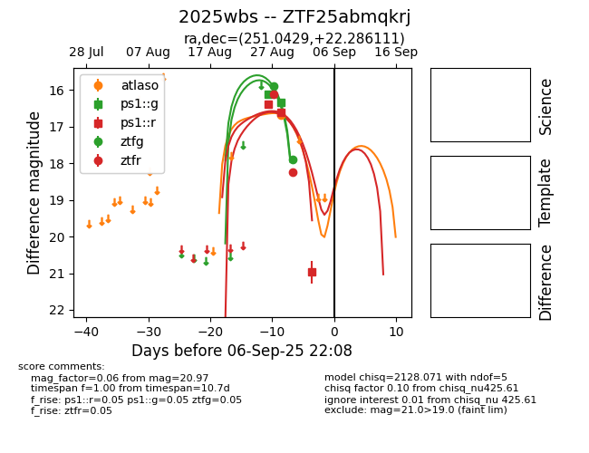

FINK: ZTF25abmqkrj
Lasair: ZTF25abmqkrj
ALeRCE: ZTF25abmqkrj
TNS: 2025wbs
YSE: 2025wbs
ZTF25abmqkrj (ztf,fink)
2025wbs (tns,yse)
equatorial (ra, dec) = (251.0429,+22.28611)
galactic (l, b) = (41.2583,+37.37852)

last atlaso=16.69, ps1::g=16.33, ps1::r=21.20, ztfg=17.90, ztfr=18.24
1 atlaso, 2 ps1::g, 5 ps1::r, 2 ztfg, 2 ztfr detections